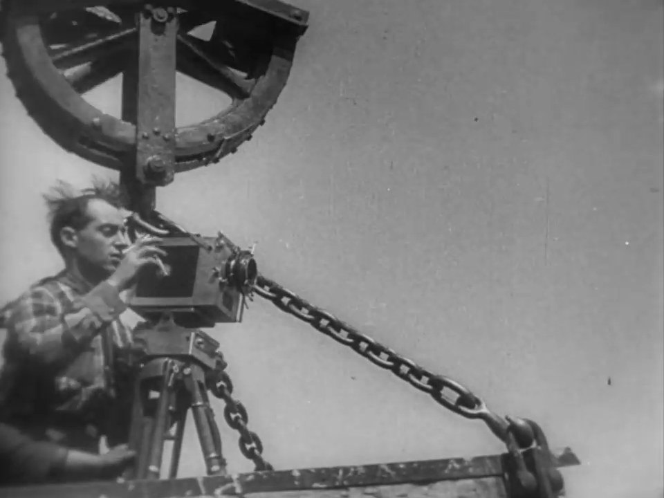

Man with a Movie Camera, frame at 40:16
Dziga Vertov · 1929 · Silent film, black and white (frame)
Free to use
The cameraman on screen is Mikhail Kaufman, Dziga Vertov's brother, who also shot the film. Vertov's wife, Yelizaveta Svilova, edited it and appears at her editing table. It was filmed over about three years in four cities: Moscow, Kiev, Kharkov and Odessa. There are no actors, but some of the cameraman's actions were staged.